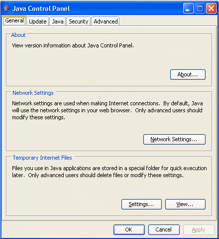

|
|
Java 업그레이드 가이드:
|
이 가이드에서는, Java 의 Microsoft 가상 머신 (VM)으로부터 Sun JRE 에 애플릿을 업그레이드 하는 이유와 방법을 설명합니다. 98% 의 케이스에서는, 애플릿을 변경하지 않고 Sun JRE 로 실행할 수 있습니다. 나머지 2% 를 위해서(때문에), 이행에 관한 힌트를 설명합니다. 업그레이드에 의해, 다양한 이점을 얻을 수 있습니다. Microsoft VM 는 초기의, 1997 년에 있어서의 버젼 1.1 의 Java 테크놀러지에 근거하고 있기 (위해)때문에입니다. Sun Microsystems 에 의한 최신으로, 표준 호환의 버젼은 1.4. 2 입니다. 2003 년에 릴리스 되어 이전의 버젼에 비해 많은 기능이 확장되고 있습니다.
Microsoft VM 는 5 년 이상전의 Java 1.1 테크놀러지가 기본으로 되어 있어 시대착오인 것은 명백합니다. 한편, Sun Microsystems 에 의한 VM 는 1.4. 2 Java Runtime Environment (JRE)의 일부로, 완전하게 표준 호환이며, 최신입니다. 이것이, Java 애플릿이나 어플리케이션을 Sun JRE 로 실행하도록(듯이) 업그레이드 하는 큰 이유의 1 개입니다. 이유는 그 밖에도 있습니다. Sun JRE 는 수백만이라고 하는 카피가 벌써 다운로드되어 배치되고 있습니다. 또, Sun JRE 를 탑재한 컴퓨터도 곧 수백만대가 출시될 예정입니다. 지금이 업그레이드 하는 시기입니다.
이제(벌써) 1 개의 이유로서 2004 년 9 월 이후, Microsoft 에서는 자사의 제품으로 Java 의 구현의 지원 또는 제공을 실시하지 않게 됩니다. 벌써 최신의 operating system의 Internet Explorer Web 브라우저에는 Java 테크놀러지를 탑재하지 않게 되고 있습니다. 이것에 의해, 2 개(살)의 중요한 영향이 예측됩니다.
Microsoft 에서는 Java 애플릿이나 어플리케이션을 J# 또는 C# 로 이행하도록(듯이) 주장하고 있습니다만, 어느 쪽의 방법에도 크로스 플랫폼 대응 기능이 제공되고 있지 않습니다. J# 와 C# 를 실행할 수 있는 것은 Microsoft Windows 플랫폼 뿐입니다.
Sun JRE 에의 업그레이드의 순서를 나타냅니다.
대부분의 애플릿은 Sun JRE 로 문제 없게 실행할 수 있습니다만, 테스트하는 것을 항상 추천합니다. 문제가 검출되면(자), 곧바로 해결할 수 있습니다. 애플릿을 업그레이드 하면, Java 플랫폼의 강고해 시큐리티 보호된, 크로스 플랫폼 표준 호환의 버젼상에서 애플릿을 실행할 수 있습니다.
Sun JRE 로 애플릿이 문제 없게 동작하는 것을 확인하면(자), 사용자에게 Sun JRE 를 배치하는 최적인 방법을 검토합니다. 「Sun JRE 의 인터넷/인트라넷 배치」 를 참조해 주세요.
Sun JRE 를 테스트용 컴퓨터에 인스톨 하고 있지 않는 경우는, 다음의 링크를 클릭해 입수합니다.

애플릿을 테스트하기 전에, 브라우저로 Sun JRE 를 실행하고 있는 것을 확인할 필요가 있습니다.
Windows 의 컨트롤 패널 ([스타트] > [설정] > [컨트롤 패널])을 열어, Java Plug-in 라는 이름의 커피 컵의 아이콘을 더블 클릭 해, Java Plug-in 컨트롤 패널을 기동합니다. 표시되면(자) [브라우저] 탭을 선택합니다. 다음과 같이 됩니다.

사용하고 있는 브라우저의 체크 박스가 선택되고 있는 것을 확인합니다.
다음에, 브라우저로 Sun JRE 를 실행하고 있는 것을 확인합니다. 실행하고 있는 경우, 다음과 같이 됩니다.
시스템 트레이의 Java 아이콘
회색 박스의 Java 로고
주:Java Plug-in 컨트롤 패널 ( 「기본」탭) 의 「콘솔을 표시」를 선택했을 경우는, Java 콘솔이 표시되어 Java 의 버젼 번호가 나타납니다 (다음의 섹션으로 설명합니다). 버젼 번호는, 브라우저로 사용중의 Sun JRE 를 나타냅니다.
애플릿을 실행해 테스트합니다. 애플릿용으로 표준적인 테스트 세트를 준비해 있는 경우는, 그 테스트를 사용해 애플릿을 실행합니다.
호환성에 문제가 있는 경우는, Java 콘솔로 상세를 확인합니다. Java 콘솔을 다음에 나타냅니다.

Java 콘솔의 상세한 것에 대하여는,http://java.sun.com/j2se/1. 4.2/docs/technotes/guides/plugin/developer_guide/console.html 를 참조해 주세요.
발생이 예상되는 잠재적인 문제점을, 증상별로 일람으로 합니다.
ClassFormatError 가 ClassLoader 로 throw 된다. 같은 애플릿이 Microsoft VM 에서는 실행할 수 있다 ClassNotFoundException 가 ClassLoader 로 throw 된다. 같은 애플릿이 Microsoft VM 에서는 실행할 수 있다 . cab 파일을 . jar 파일로서 재패키지 하면(자), Sun JRE 로 실행중의 애플릿이 미서명으로서 다루어진다. . cab 파일로서 패키지 된 같은 애플릿은, Microsoft VM 에서는 서명필로서 실행된다 . cab 파일로부터 . jar 파일에 서명필 애플릿을 업그레이드 하면(자), 그 애플릿은 Microsoft VM 로 동작하지 않게 된다. Sun JRE 에서는 정상적으로 실행된다 AccessControlException 가 Introspector.setBeanInfoSearchPath() 의 실행중에 throw 된다. 같은 애플릿이 Microsoft VM 에서는 실행할 수 있다 ClassNotFoundException 가 com.ms.security 패키지의 ClassLoader 로 throw 된다. 같은 애플릿이 Microsoft VM 에서는 실행할 수 있다 ClassNotFoundException 가 com.ms. * 패키지의 ClassLoader 로 throw 된다. 같은 애플릿이 Microsoft VM 에서는 실행할 수 있다 java.awt.Component 로부터 상속된 메소드가 동기화 너무 되면(자) 데드락이 발생하는 경우가 있다. 같은 애플릿이 Microsoft VM 에서는 실행할 수 있다 ClassCastException 가 AWT 발송이벤트쓰레드로부터 throw 된다. 같은 애플릿이 Microsoft VM 에서는 실행할 수 있다 Applet.start() 또는 Applet.stop() 가 불려 가면(자),NullPointerException 가 thread로부터 throw 된다. 같은 애플릿이 Microsoft VM 에서는 실행할 수 있다 NullPointerException 가 java.awt.Graphics.drawString() 로 throw 된다. 같은 애플릿이 Microsoft VM 에서는 실행할 수 있다 NullPointerException 가 java.awt.Graphics.drawImage() 로 throw 된다. 같은 애플릿이 Microsoft VM 에서는 실행할 수 있다 IllegalArgumentException 가 java.awt.Color 생성자 으로 throw 된다. 같은 애플릿이 Microsoft VM 에서는 실행할 수 있다 AccessControlException 가 java.lang.Thread 의 stop(),suspend(), 또는 resume() 로 throw 된다. 같은 애플릿이 Microsoft VM 에서는 실행할 수 있다 InstantiationException 가 throw 된다. 같은 애플릿이 Microsoft VM 에서는 실행할 수 있다 이 일람에 없는 문제가 발생했을 경우는, Java Upgrade Forum 를 참조해 주세요.